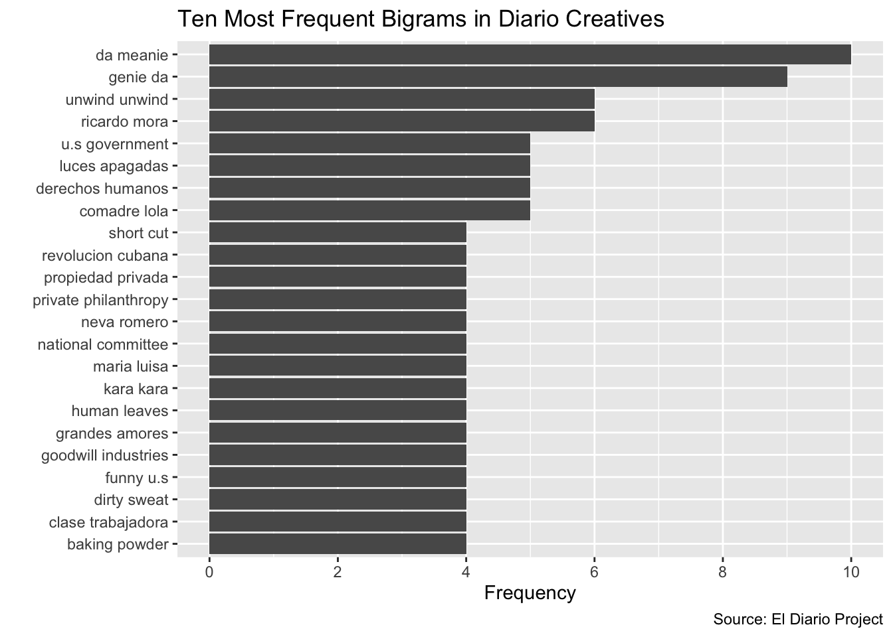

7 Bigrams
Sometimes, you will be more interested in tokenizing your text data using a different unit of analysis than the single word. There are any number of ways to tokenize a text data collection besides a single word. A simple extension of tokenizing with a single word is tokenizing by two consecutive words, which is a unit of analysis known as a bigram.
In this section, we’ll extend the material in previous sections of the workshop, and learn how to extract and clean bigrams (i.e. consecutive words) from a data collection, develop a simple bigram frequency table, and visualize bigrams using ggplot2.
7.1 Extracting bigrams from a text corpus and creating a bigram frequency table
In order to extract our bigrams, we’ll return to the diario_creatives_tidy dataset we created above, in which each row is associated with a distinct text document from the collection, and the text data for each document is contained in a separate column. Let’s remind ourselves of this dataset’s structure, by bringing it up again in the RStudio data viewer:
# Views "diario_creatives_tidy" in data viewer
View(diario_creatives_tidy)
Now, let’s extract the rough draft of a bigram frequency table using the same unnest_tokens() and count() functions that we used above to generate our single word frequency table.
In the code below, we:
- First take
diario_creatives_tidy, and then use theunnest_tokens()function to tokenize the text data in the “text” column ofdiario_creatives_tidyas bigrams. Instead of setting the token equal to “words” (as above), we settoken="ngrams", andn=2, which, taken together, effectively tokenize the data by consecutive words (i.e. as bigrams). The name of the column containing the bigrams in the tokenized dataset is set to “bigram” (i.e.output=bigram). - We then take this tokenized dataset, and, using the
%>%operator, feed this tokenized dataset into thecount()function to generate a bigram frequency table. - Finally, we’ll assign this bigram frequency table to a new object named
diario_bigram:
# Extracts table of bigram frequencies
diario_bigram<-diario_creatives_tidy %>%
unnest_tokens(input=text,
token="ngrams",
n=2,
output=bigram) %>%
count(bigram, sort=TRUE)Now, let’s go ahead and view our bigram frequency table in the data viewer.
# Views "diario_bigram"
View(diario_bigram)
7.2 Cleaning a bigram frequency table
Let’s now clean our bigram frequency table in the same way that we did above, for the word frequency table (Section 5.3): by removing any bigrams that include a Spanish or English stopword or a number. In broad strokes, the process of cleaning a bigram frequency table in this manner is very similar to cleaning a word frequency table.
One difference, at the outset, however, is that because a bigram consists of two words, we will temporarily separate out our bigrams into two columns, and clean these columns individually before merging our bigrams back together.
In the code below, we use the separate() function to separate out the words in the “bigram” column of diario_bigram into two columns, named “word1” and “word2”, where the separator is a blank space in between words (sep=" "). We’ll assign this new dataset, with the bigrams separated, to a new object named diario_bigram_separated:
# Separates bigrams in the "bigram" column of "diario_bigram" into two separate
# columns, named "word1" and "word2"
diario_bigram_separated<-diario_bigram %>%
separate(bigram, c("word1", "word2"), sep=" ")Now, let’s take a look at diario_bigram_separated within the RStudio data viewer:
View(diario_bigram_separated)With this preliminary step out of the way, we’ll now remove our stopwords.
7.2.1 Removing stopwords from bigrams
In the code below, we take diario_bigram_separated, and then sequentially remove English stopwords from the “word1” and “word2” columns, and Spanish stopwords from the “word1” and “word2” columns. The technique we use to remove these words, using the filter() function to subset rows within diario_bigram_separated which do NOT contain any of the specified stopwords, is exactly the same as what we used above to remove stopwords from our word frequency table. The data frame that results from removing the stopwords from diario_bigram_separated is assigned to a new object named diario_bigram_filtered:
# Removes English stopwords from the "word1" and "word2" columns
diario_bigram_filtered<-
diario_bigram_separated %>%
filter(!word1 %in% stop_words$word) %>% # removes English stopwords from "word1" column
filter(!word2 %in% stop_words$word) %>% # removes English stopwords from "word2" column
filter(!word1 %in% spanish_stopwords$`stopwords("spanish")`) %>% # Removes Spanish stopwords from "word1" column
filter(!word2 %in% spanish_stopwords$`stopwords("spanish")`) # Removes spanish stopwords from "word2" column7.2.2 Removing numbers from bigrams
Now, let’s remove numbers from the “word1” and “word2” columns in diario_bigram_filtered.
First, we’ll parse the “word1” column from diario_bigram_filtered for numbers, and assign the output vector to a new object named diario_bigram_word1numbers:
# Extracts a vector of numbers contained in "word1" of "diario_bigram_filtered"
# and assigns it to a new object named "diario_bigram_word1numbers"
diario_bigram_word1numbers<-parse_number(diario_bigram_filtered$word1)Then, we’ll parse the “word2” column from diario_bigram_filtered for numbers, and assign the output vector to a new object named diario_bigram_word2numbers:
# Extracts a vector of numbers contained in "word2" of "diario_bigram_filtered",
# and assigns it to a new object named "diario_bigram_word2numbers"
diario_bigram_word2numbers<-parse_number(diario_bigram_filtered$word2)We’ll now add the diario_bigram_word1numbers and diario_bigram_word2numbers vectors to the diario_bigram_filtered dataset as columns:
# Adds the "diario_bigram_word1numbers" and "diario_bigram_word2numbers" vectors
# as columns in "diario_bigram_filtered"
diario_bigram_filtered<-cbind(diario_bigram_filtered, diario_bigram_word1numbers, diario_bigram_word2numbers)This yields an updated version of diario_bigram_filtered, which now contains information on whether the the text in the columns “word1” and “word2” have numbers. More specifically, the column “diario_bigram_word1numbers” takes the value " NA" for any word in “word1” that does not contain numbers, and the column “diario_bigram_word2numbers” similarly takes on “NA” values for any word in “word2” that does not contain numbers. To confirm this, please view diario_bigram_filtered in the RStudio data viewer (View(diario_bigram_filtered)).
We’ll leverage this information to delete all rows in diario_bigram_filtered for which “word1” or “word2” contains a number. In particular, we’ll do this by taking diario_bigram_filtered, and subsetting all rows in which the “diario_bigram_word1numbers” has an NA value (which excises rows in which “word1” contains a number) using the ``filter()function, and then subsequently using the same procedure to subset all rows in which "diario_bigram_word2numbers" has an NA value (which excises rows in which "word2" contains a number). We'll assign these changes back to the samediario_bigram_filtered``` object, and thereby update the previous contents of the objects.
# Extracts rows in "diario_bigram_filtered" where the
# "diario_bigram_word1numbers" or "diario_bigram_word2numbers" columns
# contain an NA value; this effectively deletes rows where the bigram contains
# a number
diario_bigram_filtered<-diario_bigram_filtered %>%
filter(is.na(diario_bigram_word1numbers)) %>%
filter(is.na(diario_bigram_word2numbers))7.3 Reconstituting the bigram frequency table after cleaning
Now that we’ve removed stopword and numbers from the “word1” and “word2” columns, let’s put our bigram dataset back together into its original form, with one column (named “bigrams”) containing the various bigrams in the text collection, and the other column (named “n”) containing information on the frequency with which the bigrams appear.
First, we’ll use the unite() function to paste the separate words in “word1” and “word2” back into one column as bigrams. The code below takes diario_bigram_filtered, and then calls the unite() function. The first argument, bigram, is the desired name of the new column that results from pasting the columns together. The second and third arguments, word1 and word2 are the columns that we’d like to unite within the new “bigram” column, and the final argument regarding the desired separator (sep=" ") indicates that the words in the “word1” and “word2” columns are to be pasted into the “bigram” column with a space in between them. We’ll assign this dataset with the restored bigram to a new object named diario_bigram_filtered_unite:
# Takes separate words, in the "word1" and "word2" columns of
# "diario_bigram_filtered", and unites them back into one column,
# named "bigram"; this updated data frame is assigned to a new object named
# "diario_bigram_filtered_unite"
diario_bigram_filtered_unite<-diario_bigram_filtered %>%
unite(bigram, word1, word2, sep=" ")Let’s now take a look at diario_bigram_filtered_unite within the RStudio data viewer:
# Views "diario_bigram_filtered_unite" in data viewer
View(diario_bigram_filtered_unite)
You’ll see that the “diario_bigram_word1numbers” and “diario_bigram_word2numbers” columns, which were created as part of our strategy to remove numbers from the frequency table, are still present in diario_bigram_filtered_unite. Let’s remove these columns, which are no longer useful, from the frequency table, by calling the select() function, and passing a vector of these column names as an argument to the select() function with a minus sign in front. We’ll assign the resulting dataset to a new object named diario_bigram_frequency_final:
# removes the "diario_bigram_word1numbers" and "diario_bigram_word2numbers"
# columns from "diario_bigram_filtered_unite"
diario_bigram_frequency_final<-diario_bigram_filtered_unite %>%
select(-c(diario_bigram_word1numbers, diario_bigram_word2numbers))Finally, let’s view diario_bigram_frequency_final in the data viewer:
# Views diario_bigram_frequency_final in data viewer
View(diario_bigram_frequency_final)7.4 Visualizing bigrams
Now that we have the cleaned version of our bigram frequency table (diario_bigram_frequency_final_head), let’s use it to develop a visualization of the ten most frequently occurring bigrams in the text collection. At this point, the steps involved in creating such a chart are essentially identical to the workflow/code described in Section 6.1 on charting word frequencies.
First, we’ll take diario_bigram_frequency_final and use the slice_max() function to extract the bigrams with the ten highest frequencies (i.e. the ten highest values of “n”). We’ll assign this subsetted dataset to a new object named diario_bigram_top_ten:
# Extracts a data frame of the ten most frequently occurring bigrams in
# "diario_bigram_filtered_unite" and assigns this data frame to a new object
# named "diario_bigram_top_ten"
diario_bigram_top_ten<-diario_bigram_frequency_final %>%
slice_max(n, n=10)Let’s view diario_bigram_top_ten in the data viewer:
# Views "diario_bigram_top_ten" in data viewer
View(diario_bigram_top_ten)
Now, let’s use diario_bigram_top_ten to create a horizontal bar chart of the most frequently ocurring bigrams, and assign it to a new object named bigram_graph:
# Creates sideways bar chart of 10 most frequently ocurring bigrams
bigram_graph<-
ggplot(diario_bigram_top_ten)+
geom_col(aes(x=reorder(bigram, n), y=n))+
coord_flip()+
labs(title="Ten Most Frequent Bigrams in Diario Creatives",
caption = "Source: El Diario Project",
x="",
y="Frequency")+
scale_y_continuous(breaks=c(0, 2, 4, 6, 8, 10))The code used to generate bigram_graph above is almost identical to the code used to generate the sideways bar chart in Section 6.1. The only difference is the final line of code, which uses the scale_y_continuous() function to set custom tick marks for the axis on which frequencies are displayed.
Let’s now take a look at bigram_graph:
# prints "bigram_graph"
bigram_graph